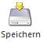
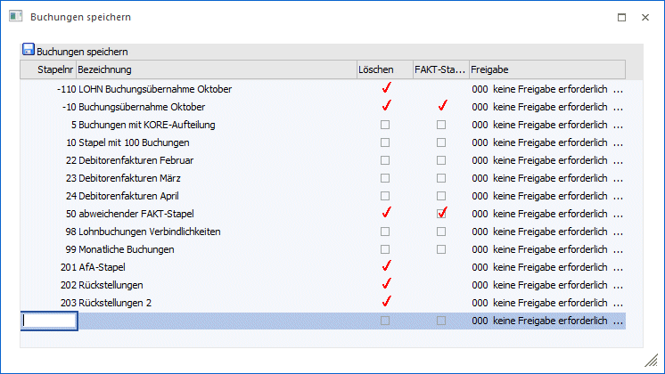

Den "Speichern"-Button finden Sie in den Programmpunkten
ü Buchen (Dialog Stapel)
ü Buchen (Dialog Stapel) Quick
ü Buchen Zahlungsmittelkonten
ü Dialogbilanz
Mit dieser Funktion können in der Bearbeitungstabelle befindliche Buchungszeilen unter einer bestimmten Stapelnummer und einem beliebigen Beschreibungstext abgespeichert werden. Zusätzlich kann auch die Freigabe von Buchungsstapeln beim Abspeichern verändert werden.
Nach Drücken des Buttons
Ø

öffnet sich folgendes Optionsfenster:

Hier können Sie die Buchungen entweder unter einer bestehenden Stapelnummer speichern, wobei die Buchungen, die bisher unter dieser Nummer gespeichert waren, überschrieben werden (außer bei den Stapeln -1 bis -12, die automatisch aus der Fakturierung erstellt werden), ODER durch einen Klick in eine neue Zeile einfach einen neuen Stapel anlegen (durch Drücken der + - Taste wird die nächste freie Stapelnummer vorgeschlagen).
Dabei können die Stapelnummer 1 bis 99 und 500 bis 999 verwendet werden (mit Ausnahme der Dialogbilanzierung, dort können nur die Stapel 200 bis 299 angelegt werden).
Durch Aktivieren der Spalte "Löschen" legen Sie fest, ob der Buchungsstapel nach Absetzen (Bestätigen des Buchungsvorganges) der im Stapel befindlichen Buchungen automatisch gelöscht werden soll oder bestehen bleiben soll (sinnvoll z.B. bei wiederkehrenden Automatik-Buchungsstapeln).
Diese Buchungsstapel können jederzeit wieder in die Bearbeitungstabelle geladen und weiterbearbeitet werden (siehe dazu Buchungen laden) oder über die Funktion Aktionsplan und Auto-Buchen nach einem frei definierbaren Zeitplan automatisch abgerufen werden.
Durch Aktivieren der Spalte "FAKT-Stapel" und der Spalte "Löschen" steht dieser Buchungsstapel in der WinLine FAKT als abweichender FAKT-Stapel zur Auswahl zur Verfügung, wenn die Option "Abweichende Faktstapel verwenden" im FAKT-Parameter aktiviert ist.
Achtung
Es muss darauf geachtet werden, dass Stapel immer nur in dem Programmpunkt wieder aufgerufen werden können, in dem sie auch gespeichert wurden.
Einzige Ausnahme hierzu bilden die Stapel des "Buchen Zahlungsmittelkonto" - die so gespeicherten Stapel können auch im "Buchen (Dialog Stapel)" und "Buchen (Dialog Stapel) Quick geöffnet werden - aber nicht umgekehrt.